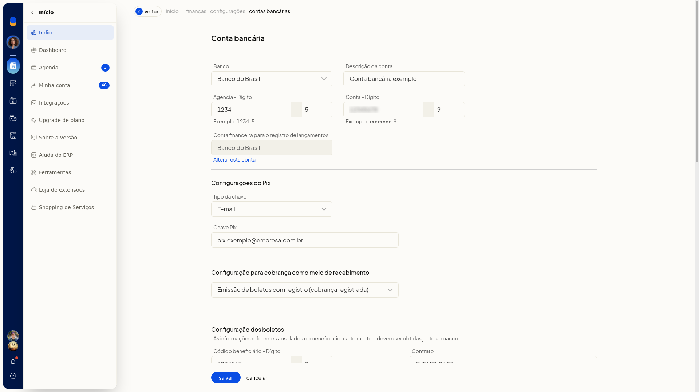
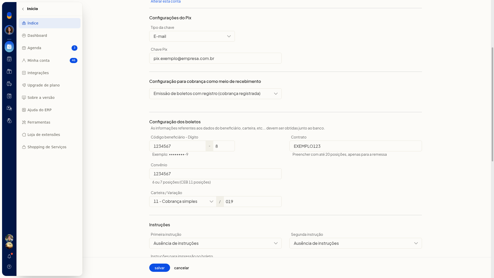
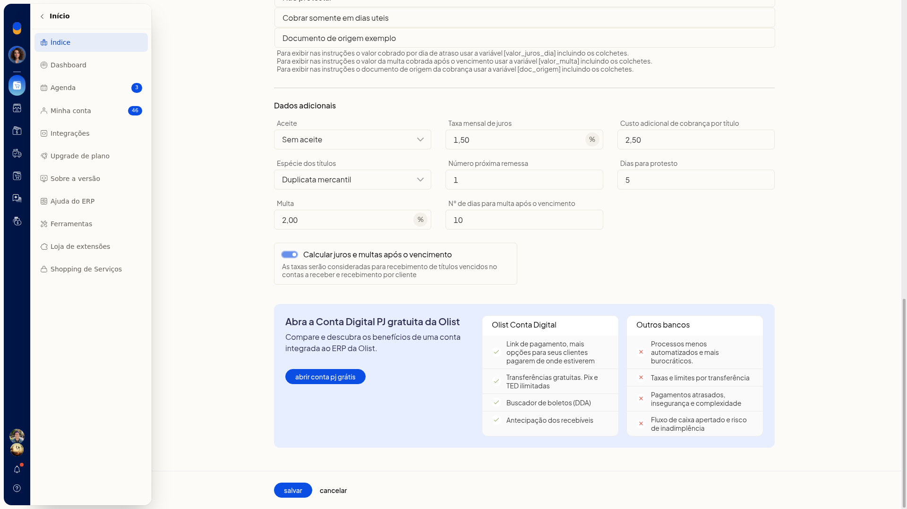

Configurar a cobrança registrada do Banco do Brasil na conta bancária
No ERP da Olist, a cobrança registrada do Banco do Brasil define a conta bancária como meio de recebimento com boleto registrado. Você informa beneficiário, contrato, convênio, carteira, instruções do boleto, juros, multa, protesto e espécie do título.
O cadastro fica em Configurações > Configurações ERP > Finanças > Cadastro de contas bancárias.
Importante
- Tenha em mãos o código do beneficiário, o contrato e o convênio informados pelo banco.
- Contrato aceita até 20 posições e vale apenas para a remessa.
- Convênio tem 6 ou 7 posições. No CEB, use 11 posições.
- Na última linha das instruções de impressão, para o juros diário, use a variável [valor_juros_dia], com os colchetes.
- A tela não marca esses campos com asterisco.
Instruções
Dados da conta
-
Acesse Configurações > Configurações ERP > Finanças > Cadastro de contas bancárias.
-
Clique em Incluir conta bancária.
-
Em Banco, selecione Banco do Brasil.
-
Informe Descrição da conta, a agência e o dígito no campo -, a conta e o dígito no campo -.

-
Em Conta financeira para o registro de lançamentos, selecione uma conta já cadastrada ou Criar nova conta.
Cobrança registrada
- Em Configuração para cobrança como meio de recebimento, selecione Emissão de boletos com registro (cobrança registrada).
- Informe Código beneficiário e o dígito no campo -, Contrato e Convênio.
- Em Carteira, selecione a opção e informe Variação no campo /.
-
11 - Cobrança simples
-
12 - Cobrança indexada
-
15 - Cobrança de prêmios de seguro
-
16 - Cobrança direta
-
17 - Cobrança simples
-
18 - Cobrança direta pré-impressa
-
21 - Cecred
-
31 - Cobrança caucionada/vinculada
-
51 - Carteira descontada
-
11 - Cobrança descontada
-
11 - Cobrança vinculada
-
17 - Cobrança descontada
-
17 - Cobrança vinculada

Instruções, juros e multa
- Selecione Primeira instrução e Segunda instrução. As opções são as mesmas nos dois campos:
- Ausência de instruções
- Cobrar juros
- Protestar no 3º, 4º ou 5º dia útil após o vencimento
- Protestar em n dias
- Não protestar
- Protestar no 10º, 15º, 20º, 25º, 30º ou 45º dia corrido após vencimento
- Conceder desconto só até a data estipulada
- Preencha as quatro linhas de Instruções para impressão no boleto.
- Em Aceite, selecione Sem aceite ou Com aceite.
- Em Espécie dos títulos, selecione a espécie:
- Duplicata mercantil
- Nota promissória
- Nota de seguro
- Recibo
- Letra de câmbio
- Warrant
- Cheque
- Duplicata de serviço
- Nota de débito
- Apólice de seguro
- Duplicata rural
- Dívida ativa da união
- Dívida ativa do estado
- Dívida ativa do município
- Informe Número próxima remessa e Dias para protesto.

- Informe Taxa mensal de juros e Custo adicional de cobrança por título em valor numérico.
- Informe Multa em percentual e N° de dias para multa após o vencimento.
- Marque Calcular juros e multas após o vencimento se quiser que as taxas sejam consideradas no recebimento de títulos vencidos no contas a receber e no recebimento por cliente.

- Clique em salvar para gravar a conta bancária com a cobrança registrada do Banco do Brasil.